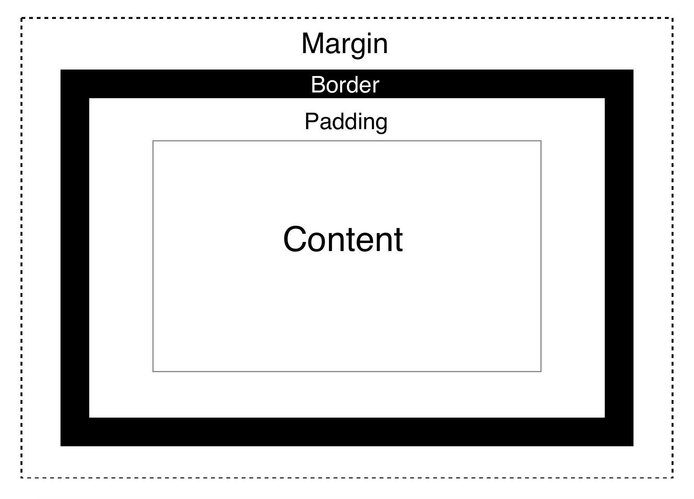

Explaining how they are diffrent and how to use them
Margin vs. Padding
Many beginners struggle with knowing what is margin and padding in CSS. I know I didn't understand this when I started with HTML/CSS and had no idea when to use one over the other. Something to help demonstrate this is the Box Model.
{kind=link}
Margin will seperate the entire element from other elements. In other words, it generates the white space outside the border as seen in the Box Model.
Padding will push the border away from the content. The content can be text or an image.
Usage
If you use just margin: ; in a CSS property, you need 4 attributes. It will start from the top and work clockwise. Like this margin: top, right, bottom, left; Here's a real example.
margin: 40px, 10px, 40px, 10px;
This will add 40 pixels of margin to the top and bottom, and 10 pixels to the right and left. But you can also specify which side you want to add margin to. Here's a list of all of the properties.
- margin-top
- margin-right
- margin-bottom
- margin-left
For these properties, you need just one attribute. All of the same rules apply to padding.
Examples
Let's look into some examples to demonstrate margin and padding. First, we'll see margin.
Remember: If you only apply one attribute when you use margin, it wil set it for all sides. You will see it in this example.
Code
div {
border: solid 2px green;
margin: 50px;
}
Output
This example has 50 pixles of margin all around.
Output with no margin
This example has 0 pixles of margin all around.
Padding Examples
Now let's see padding in an example.
Code
div {
border: solid 2px green;
padding: 50px;
}
Output
This example has 50 pixles of margin all around.
Output with no margin
This example has 0 pixles of margin all around.
Conclusion
So always remember the Box Model. That is what helped me in knowing the differences between margin and padding. I have used both properties numerous amounts of times and you will properly too.
Difficulty: Beginner
May 22nd, 2017
Editor: Kellan Gash
Creative Director: Luke Holsinger